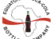
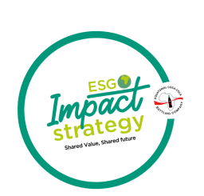

<title>Sustainable Business 2035</title>
<link rel="preconnect" href="https://fonts.googleapis.com">
<link rel="preconnect" href="https://fonts.gstatic.com" crossorigin>
<link rel="stylesheet" href="https://fonts.googleapis.com/css2?family=Figtree:wght@400;500;600;700;800&display=swap">
<style>
  /* Layout: 1440 desktop frame, 170px gutters (1100 content column), alternating image/copy pillar rows. Single light look, as designed. */
  :root {
    color-scheme: light;
    --ink: #101820;
    --body: #4a4f55;
    --muted: #8a8478;
    --red: #f40009;
    --crimson: #a21942;
    --cream: #f1efea;
    --rule: #e5e2da;
    --rule-strong: #d8d4c9;
    --paper: #ffffff;
    --footer-muted: #9aa0a6;
    --c-packaging: #9a6b15;
    --c-water: #0f7fa0;
    --c-climate: #3f7e44;
    --c-communities: #b85f00;
    --c-people: #a21942;
    --font: "Figtree", "Helvetica Neue", Arial, sans-serif;
    --gutter: clamp(16px, 11.8vw, 170px);
  }
  *, *::before, *::after { box-sizing: border-box; }
  body { margin: 0; background: var(--paper); color: var(--ink); font-family: var(--font); font-size: 16px; -webkit-font-smoothing: antialiased; }
  p { margin: 0; }
  a { color: inherit; text-decoration: none; }
  a:focus-visible, button:focus-visible { outline: 2px solid var(--red); outline-offset: 3px; border-radius: 2px; }
  .wrap { padding-inline: var(--gutter); }
  .eyebrow { font-weight: 700; font-size: 13px; letter-spacing: 0.14em; text-transform: uppercase; color: var(--red); }

  /* Header */
  .site-header { display: grid; grid-template-columns: 1fr auto 1fr; align-items: center; min-height: 124px; padding: 14px clamp(16px, 3vw, 44px); background: var(--paper); }
  .nav { display: flex; align-items: center; gap: 34px; font-weight: 600; font-size: 16px; white-space: nowrap; }
  .nav .lang { display: flex; gap: 14px; }
  .nav a:hover { color: var(--red); }
  .nav-right { justify-self: end; }
  .logo { display: block; width: 67px; height: 50px; }
  .logo img { width: 100%; height: 100%; object-fit: contain; }
  .search { width: 26px; height: 26px; padding: 0; border: 0; background: none; color: var(--ink); cursor: pointer; }
  .wave { display: block; width: 100%; height: auto; aspect-ratio: 1440 / 68; }

  /* Hero */
  .hero { padding-block: 104px 84px; }
  .hero-row { display: flex; gap: 72px; align-items: flex-start; justify-content: space-between; max-width: 1100px; }
  .hero-copy { display: flex; flex-direction: column; gap: 22px; min-width: 0; max-width: 660px; }
  .hero-kicker { font-weight: 700; font-size: 26px; letter-spacing: -0.01em; color: var(--red); }
  .hero-lede { font-size: clamp(28px, 3.06vw, 44px); line-height: 1.15; letter-spacing: -0.02em; text-wrap: balance; }
  .on-page { display: flex; flex-direction: column; align-items: flex-end; gap: 16px; flex-shrink: 0; }
  .on-page a { display: flex; align-items: center; gap: 12px; font-weight: 500; font-size: 19px; line-height: 1.35; text-align: right; }
  .on-page a::after { content: ""; width: 7px; height: 7px; border-radius: 50%; background: var(--red); flex-shrink: 0; }
  .on-page a:hover { color: var(--red); }

  /* Why 2035 */
  .why { position: relative; padding-block: 64px 96px; }
  .why h2 { margin: 0 0 48px; font-weight: 700; font-size: clamp(34px, 3.33vw, 48px); line-height: 1.1; letter-spacing: -0.02em; text-wrap: balance; }
  .why-badge { position: absolute; top: 43px; right: calc(var(--gutter) - 37px); width: 256px; height: auto; }
  .prose { display: flex; flex-direction: column; gap: 18px; max-width: 660px; font-size: 17px; line-height: 1.7; color: var(--body); }
  .journey { margin-top: 114px; }
  .timeline { list-style: none; margin: 72px 0 0; padding: 0; display: grid; grid-template-columns: repeat(5, minmax(0, 206px)); gap: 24px; }
  .milestone { position: relative; border-top: 2px solid var(--rule-strong); padding-top: 22px; display: flex; flex-direction: column; gap: 8px; }
  .milestone::before { content: ""; position: absolute; left: 0; top: -9px; width: 16px; height: 16px; border-radius: 50%; background: var(--rule-strong); }
  .milestone .year { font-weight: 800; font-size: 30px; line-height: 1; letter-spacing: -0.03em; font-variant-numeric: tabular-nums; }
  .milestone .what { font-size: 15px; line-height: 1.5; color: var(--body); }
  .milestone.is-target { border-top-color: var(--red); }
  .milestone.is-target::before { background: var(--red); }
  .milestone.is-target .year { color: var(--red); }

  /* Pillars */
  .pillars-sec { padding-block: 104px 40px; }
  .pillars-head { display: flex; flex-direction: column; gap: 20px; max-width: 1100px; }
  .pillars-head h2 { margin: 16px 0 0; max-width: 470px; font-weight: 800; font-size: clamp(34px, 3.06vw, 44px); line-height: 1.08; letter-spacing: -0.028em; text-wrap: balance; }
  .pillars-head .intro { max-width: 585px; font-size: 18px; line-height: 1.6; color: var(--body); }
  .pillars-head .badge-slot { width: 200px; height: 200px; }
  .pillars { margin-top: 64px; max-width: 1100px; }
  .pillar { --c: var(--ink); display: grid; grid-template-columns: 443px minmax(0, 599px); gap: 58px; padding-block: 56px; border-top: 1px solid var(--rule); justify-content: space-between; align-items: start; }
  .pillar.flip { grid-template-columns: minmax(0, 599px) 443px; }
  .pillar.flip .pillar-media { order: 2; }
  .pillar-media img { display: block; width: 443px; max-width: 100%; height: auto; aspect-ratio: 443 / 374; object-fit: cover; }
  .pillar-copy { display: flex; flex-direction: column; gap: 30px; min-width: 0; }
  .pillar h3 { margin: 0 0 14px; font-weight: 800; font-size: 34px; line-height: 1.1; letter-spacing: -0.025em; }
  .pillar .lead { max-width: 463px; font-size: 17px; line-height: 1.6; color: var(--body); }
  .label { margin-bottom: 14px; font-weight: 700; font-size: 12px; letter-spacing: 0.12em; text-transform: uppercase; color: var(--muted); }
  .goals { display: grid; grid-template-columns: repeat(2, minmax(0, 285px)); gap: 18px 28px; }
  .goal { display: flex; gap: 14px; align-items: flex-start; border-top: 2px solid var(--c); padding-top: 12px; }
  .goal .num { font-weight: 800; font-size: 36px; line-height: 1; letter-spacing: -0.04em; color: var(--c); white-space: nowrap; font-variant-numeric: tabular-nums; }
  .goal .txt { display: flex; flex-direction: column; gap: 4px; min-width: 0; font-size: 15px; line-height: 1.4; }
  .goal .base { font-size: 13px; color: var(--muted); }
  .levers { list-style: none; margin: 0; padding: 0; display: grid; grid-template-columns: repeat(2, minmax(0, 285px)); gap: 8px 28px; }
  .levers-label { margin-bottom: 12px; }
  .levers li { display: flex; gap: 10px; font-size: 15.5px; line-height: 1.5; color: var(--body); }
  .levers li::before { content: ""; flex: 0 0 8px; height: 2px; margin-top: 10px; background: var(--c); }
  .read-more { align-self: flex-start; display: inline-flex; gap: 8px; padding-bottom: 3px; border-bottom: 2px solid var(--c); font-weight: 700; font-size: 15px; color: var(--c); }
  .read-more span { transition: transform .2s ease; }
  .read-more:hover span { transform: translateX(3px); }

  /* Performance band */
  .perf { background: var(--crimson); color: #fff; display: flex; gap: 56px; align-items: center; padding-block: 32px 96px; }
  .perf > * { flex: 1 1 0; min-width: 0; }
  .perf .eyebrow { color: #fff; }
  .perf h2 { margin: 14px 0; font-weight: 800; font-size: clamp(30px, 2.92vw, 42px); line-height: 1.08; letter-spacing: -0.028em; }
  .perf p.copy { font-size: 17px; line-height: 1.65; max-width: 522px; }
  .btn { display: inline-flex; gap: 10px; align-items: center; padding: 17px 30px; border-radius: 999px; background: #fff; color: var(--crimson); font-weight: 800; font-size: 16px; letter-spacing: -0.01em; white-space: nowrap; }
  .btn:hover { background: var(--cream); }

  /* Footer */
  .site-footer { background: var(--ink); color: #fff; display: flex; flex-wrap: wrap; gap: 16px 28px; justify-content: space-between; align-items: center; padding-block: 48px; }
  .site-footer nav { display: flex; flex-wrap: wrap; gap: 12px 28px; font-weight: 600; font-size: 14px; }
  .site-footer small { font-size: 13px; color: var(--footer-muted); }

  /* Responsive */
  @media (max-width: 1240px) {
    .why-badge { position: static; display: block; width: 200px; margin: 0 0 32px; }
    .pillar, .pillar.flip { grid-template-columns: minmax(0, 360px) minmax(0, 1fr); gap: 40px; }
    .pillar.flip { grid-template-columns: minmax(0, 1fr) minmax(0, 360px); }
  }
  @media (max-width: 1080px) {
    .site-header { grid-template-columns: auto 1fr auto; min-height: 88px; }
    .nav .links, .nav-right .links { display: none; }
    .hero-row { flex-direction: column; gap: 40px; }
    .on-page { align-items: flex-start; }
    .on-page a { flex-direction: row-reverse; text-align: left; }
    .timeline { grid-template-columns: repeat(auto-fit, minmax(160px, 1fr)); row-gap: 40px; }
  }
  @media (max-width: 760px) {
    .hero { padding-block: 56px 48px; }
    .pillar, .pillar.flip { grid-template-columns: minmax(0, 1fr); gap: 28px; }
    .pillar.flip .pillar-media { order: 0; }
    .goals, .levers { grid-template-columns: minmax(0, 1fr); }
    .perf { flex-direction: column; align-items: flex-start; gap: 28px; padding-block: 24px 64px; }
    .journey { margin-top: 64px; }
  }
  @media (prefers-reduced-motion: reduce) { .read-more span { transition: none; } }
</style>

<header class="site-header">
  <nav class="nav" aria-label="Primary">
    <div class="lang"><a href="#" aria-current="true">EN</a><a href="#">FR</a></div>
    <div class="nav links" style="gap:34px"><a href="#">Home</a><a href="#">About us</a><a href="#" aria-current="page">Sustainable Business</a></div>
  </nav>
  <a class="logo" href="#" aria-label="Home"></a>
  <nav class="nav nav-right" aria-label="Secondary">
    <div class="nav links" style="gap:34px"><a href="#">Ethics &amp; Compliance</a><a href="#">Media</a><a href="#">Careers</a><a href="#">Contact us</a></div>
    <button class="search" type="button" aria-label="Search">
      <svg width="26" height="26" viewBox="0 0 26 26" fill="none" stroke="currentColor" stroke-width="2.4" stroke-linecap="round"><circle cx="11" cy="11" r="8.5"/><path d="M17.5 17.5 24 24"/></svg>
    </button>
  </nav>
</header>

<svg class="wave" viewBox="0 0 1440 68" preserveAspectRatio="none" aria-hidden="true"><path fill="#f1efea" d="M0 46C230 12 480 4 730 28 940 48 1120 74 1440 22V68H0Z"/></svg>

<main>
  <section class="hero wrap">
    <div class="hero-row">
      <div class="hero-copy">
        <p class="hero-kicker">Sustainable business</p>
        <p class="hero-lede">At Equatorial Coca-Cola, we have a long history of partnering with our communities to create long-term value for our shared future.</p>
      </div>
      <nav class="on-page" aria-label="On this page">
        <a href="#strategy">Our ESG Impact Strategy 2035</a>
        <a href="#pillars">ESG Impact Strategy 2035 Pillars</a>
        <a href="#performance">Our ESG performance: ECCBC ESG Report</a>
      </nav>
    </div>
  </section>

  <section class="why wrap" id="strategy">
    <h2>Our ESG Impact Strategy 2035</h2>
    
    <div class="prose">
      <p>Our vision is to be the best FMCG company in each of the markets that we operate, lead Africa system growth and become the most important Coca-Cola anchor partner in Africa.<br>Achieving this ambition means growing our business responsibly while creating long-term value for our stakeholders and contributing positively to the communities and environments connected to our operations. Sustainability is therefore an integral part of how we manage our business, make decisions and prepare for the future.</p>
      <p>Building on the foundations of our ESG Impact Strategy 2030, we have extended our ambition towards 2035, strengthening the integration of sustainability into our business priorities, investment decisions and operations. Our ESG Impact Strategy 2035 provides a long-term framework to address the issues that matter most to our business, our stakeholders and the communities we serve.</p>
      <p>A key step in this evolution was the completion of our Double Materiality Assessment. Through engagement with internal and external stakeholders, we assessed sustainability topics from two complementary perspectives: how environmental and social issues can affect ECCBC’s business and long-term value creation, and how our activities and value chain can impact people and the environment. This approach enables us to focus our efforts where ECCBC can make the most meaningful difference while strengthening the resilience of our business.</p>
      <p>The findings have helped sharpen our priorities across our five ESG pillars: Packaging, Water, Climate, Communities and People. Across each pillar, our commitments are translated into actions and measurable ambitions, reflecting both the realities of the African markets in which we operate and the areas where we can contribute the greatesiit value.<br>Our approach combines a common Group ambition with action adapted to local realities. We work across our value chain and with our employees, The Coca-Cola Company, suppliers, customers, communities and other stakeholders to turn our commitments into meaningful progress across the markets where we operate.</p>
      <p>Our ESG Impact Strategy 2035 continues to support the United Nations Sustainable Development Goals and aligns with the broader sustainability ambitions of The Coca-Cola Company, while reflecting ECCBC’s own footprint, priorities and operating context.<br>Through this strategy, we aim to support the long-term growth and resilience of our business while creating positive impact for people, communities and the environment. In doing so, sustainability remains closely connected to our ambition to grow responsibly and create lasting value across Africa.</p>
    </div>
    <p class="eyebrow journey">Our ESG journey</p>
    <ol class="timeline">
      <li class="milestone"><span class="year">2021</span><span class="what">Materiality assessment defines six pillars and 2030 goals</span></li>
      <li class="milestone"><span class="year">2022</span><span class="what">Sustainability strategy reinforced around ESG</span></li>
      <li class="milestone"><span class="year">2025</span><span class="what">ECCBC double materiality assessment sets the priorities for the new strategy</span></li>
      <li class="milestone"><span class="year">2026</span><span class="what">ECCBC announces its Impact Strategy 2035</span></li>
      <li class="milestone is-target"><span class="year">2035</span><span class="what">ECCBC extends its strategy to five pillars and a 2035 horizon</span></li>
    </ol>
  </section>

  <section class="pillars-sec wrap" id="pillars">
    <header class="pillars-head">
      <div>
        <p class="eyebrow">Shared value, shared future</p>
        <h2>ESG Impact Strategy 2035 pillars</h2>
      </div>
      <p class="intro">Built around five priority pillars, the strategy defines where we focus, how we allocate resources and how we measure progress. Each pillar has a set of 2035 goals and the levers of change that will get us there.</p>
      <div class="badge-slot" aria-hidden="true"></div>
    </header>
    <div class="pillars" id="pillar-list"></div>
  </section>

  <svg class="wave" viewBox="0 0 1440 68" preserveAspectRatio="none" aria-hidden="true"><path fill="#a21942" d="M0 46C230 12 480 4 730 28 940 48 1120 74 1440 22V68H0Z"/></svg>
  <section class="perf wrap" id="performance">
    <div>
      <p class="eyebrow">Progress</p>
      <h2>Our 2025 ESG performance</h2>
      <p class="copy">Since we began our activity in Africa we have combined social and environmental commitment with a growth strategy that has allowed us to grow sustainably in every country where we operate.</p>
    </div>
    <div><a class="btn" href="#">Read the ESG report <span aria-hidden="true">→</span></a></div>
  </section>
</main>

<footer class="site-footer wrap">
  <nav aria-label="Footer"><a href="#">Contact us</a><a href="#">Legal Advice</a><a href="#">Privacy Policy</a><a href="#">Cookie policy</a></nav>
  <small>© 2026 Equatorial Coca-Cola Bottling Company. All rights reserved.</small>
</footer>

<script>
  const PILLARS = [
    { name: "Packaging", color: "--c-packaging", img: "assets/packaging.png", sdg: "SDG 12, Responsible consumption and production",
      lead: "Preserve the value of our packaging materials and our environment by increasing the reduction, reuse and recycling of our packaging and ensuring that it does not end up in our shared waterways or in the environment.",
      goals: [["75%", "Collection of the equivalent number of bottles and cans we introduce into the market each year"], ["20%", "Recycled material used in our packaging"]],
      levers: ["Redesign our packaging to reduce waste and improve recyclability", "Implement circular economy practices in plastic bottles", "Support the creation of collection and recycling schemes in our territories", "Introduce rPET in our key markets"] },
    { name: "Water", color: "--c-water", img: "assets/water.png", sdg: "SDG 6, Clean water and sanitation",
      lead: "Maximize the value of our shared water resources by being responsible of our use of water inside the business and by helping our communities to access and better manage their water resources.",
      goals: [["–33%", "Water use per litre of beverage produced", "versus 2019"], ["100%", "Local replenishment of the water we use in our high-risk locations"]],
      levers: ["Optimise water use in our operations and processes", "Facilitate access to safe and drinkable water for the communities around us", "Leverage our wastewater treatment plants to recycle and reuse water", "Ensure the availability of water from the watershed"] },
    { name: "Climate", color: "--c-climate", img: "assets/climate.png", sdg: "SDG 13, Climate action",
      lead: "Preserve our shared environment by driving efficiencies and innovation, so that we create more value with less energy, both inside the business and in our communities.",
      goals: [["–31%", "Energy used per litre of beverage produced", "versus 2019"], ["–5%", "Absolute carbon emissions from our own operations (scopes 1 and 2)", "versus 2019"], ["–30%", "Carbon intensity across our value chain (scope 3)", "versus 2019"]],
      levers: ["Improve energy efficiency in manufacturing", "Transition to renewable energy", "Sustainable packaging and circular economy", "Replace cooling equipment with low-emission models", "Low-carbon ingredient procurement"] },
    { name: "Communities", color: "--c-communities", img: "assets/communities.png", sdg: "SDG 11, Sustainable cities and communities",
      lead: "We will create lasting value for our communities by investing in them and in their future, focusing on improving their health and livelihoods, and by investing in the employability and skills of women and young people.",
      goals: [["2M", "People whose lives are positively impacted by our community programmes"]],
      levers: ["Provide education opportunities for women and youth", "Promote economic empowerment", "Deliver health programmes to improve welfare in areas of need", "Ensure sustainable access to safe water", "Strengthen climate resilience, disaster preparedness and response"] },
    { name: "People", color: "--c-people", img: "assets/people.png", sdg: "SDG 8, Decent work and economic growth", goalsLabel: "2030 goals",
      lead: "We will give equal value to all our people, providing them with the tools and opportunities to grow professionally and eliminating barriers to their progress.",
      goals: [["40%", "Women in managerial positions"], ["40k", "Young people trained through our skills development programmes"], ["30%", "Employees taking part in volunteering activities"]],
      levers: ["Strengthen diversity and inclusion across ECCBC", "Increase female representation and youth participation", "Elevate our employer brand to attract young talent", "Scale employee volunteering and recognise measurable community impact"] },
  ];
  const esc = s => s.replace(/[&<>"]/g, c => ({ "&": "&amp;", "<": "&lt;", ">": "&gt;", '"': "&quot;" }[c]));
  document.getElementById("pillar-list").innerHTML = PILLARS.map((p, i) => `
    <article class="pillar${i % 2 ? " flip" : ""}" style="--c: var(${p.color})" id="pillar-${p.name.toLowerCase()}">
      <div class="pillar-media"></div>
      <div class="pillar-copy">
        <div><h3>${esc(p.name)}</h3><p class="lead">${esc(p.lead)}</p></div>
        <div><p class="label">${esc(p.goalsLabel || "2035 goals")}</p>
          <div class="goals">${p.goals.map(([n, t, b]) => `<div class="goal"><span class="num">${esc(n)}</span><span class="txt"><span>${esc(t)}</span>${b ? `<span class="base">${esc(b)}</span>` : ""}</span></div>`).join("")}</div>
        </div>
        <div><p class="label levers-label">Levers of change</p>
          <ul class="levers">${p.levers.map(l => `<li>${esc(l)}</li>`).join("")}</ul>
        </div>
        <a class="read-more" href="#">Read more <span aria-hidden="true">→</span></a>
      </div>
    </article>`).join("");
</script>
